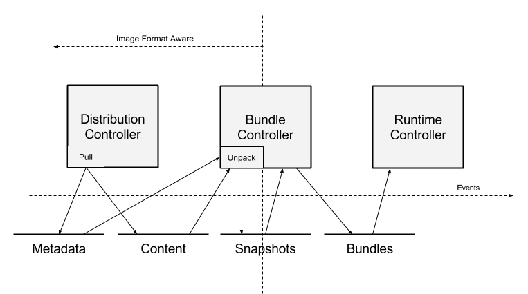

Data Flow
In the past, container systems have hidden the complexity of pulling container images, hiding many details and complexity. This document intends to shed light on that complexity and detail how a "pull" operation will look from the perspective of a containerd user. We use the bundle as the target object in this workflow, and walk back from there to describe the full process. In this context, we describe both pulling an image and creating a bundle from that image.
With containerd, we redefine the "pull" to comprise the same set of steps encompassed in prior container engines. In this model, an image defines a collection of resources that can be used to create a bundle. There is no specific format or object called an image. The goal of the pull is to produce a set of steps is to resolve the resources that comprise an image, with the separation providing lifecycle points in the process.
A reference implementation of the complete "pull", performed client-side, will be provided as part of containerd, but there may not be a single "pull" API call.
A rough diagram of the dataflow, along with the relevant components, is below.

While the process proceeds left to right in the diagram, this document is written right to left. By working through this process backwards, we can best understand the approach employed by containerd.
Running a Container
For containerd, we'd generally like to retrieve a bundle. This is the runtime, on-disk container layout, which includes the filesystem and configuration required to run the container.
Generically, speaking, we can say we have the following directory:
config.json
rootfs/
The contents of config.json isn't interesting in this context, but for
clarity, it may be the runc config or a containerd specific configuration file
for setting up a running container. The rootfs is a directory where
containerd will setup the runtime container's filesystem.
While containerd doesn't have the concept of an image, we can effectively build this structure from an image, as projected into containerd. Given this, we can say that requirements for running a container are to do the following:
- Convert the configuration from the container image into the target format for the containerd runtime.
- Reproduce the root filesystem from the container image. While we could
unpack this into
rootfsin the bundle, we can also just pass this as a set of mounts to the container configuration.
The above defines the framework in which we will operate. Put differently, we can say that we want to create a bundle by creating these two components of a bundle.
Creating a Bundle
Now that we've defined what is required to run a container, a bundle, we need to create one.
Let's say we have the following:
ctr run ubuntu
This does no pulling of images. It only takes the name and creates a bundle. Broken down into steps, the process looks as follows:
- Lookup the digest of the image in metadata store.
- Resolve the manifest in the content store.
- Resolve the layer snapshots in the snapshot subsystem.
- Transform the config into the target bundle format.
- Create a runtime snapshot for the rootfs of the container, including resolution of mounts.
- Run the container.
From this, we can understand the required resources to pull an image:
- An entry in the metadata store a name pointing at a particular digest.
- The manifest must be available in the content store.
- The result of successively applied layers must be available as a snapshot.
Unpacking Layers
While this process may be pull or run driven, the idea is quite simple. For each layer, apply the result to a snapshot of the previous layer. The result should be stored under the chain id (as defined by OCI) of the resulting application.
Pulling an Image
With all the above defined, pulling an image simply becomes the following:
- Fetch the manifest for the image, verify and store it.
- Fetch each layer of the image manifest, verify and store them.
- Store the manifest digest under the provided name.
Note that we leave off using the name to resolve a particular location. We'll leave that for another doc!